Passo 1
Em seguida, clique nos três pontinhos localizados no canto superior direito da barra de navegação conforme a imagem a seguir.
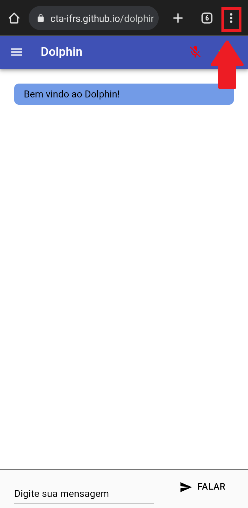
Passo 2
Após, procure a opção “Instalar Aplicativo”, conforme mostra a próxima imagem.
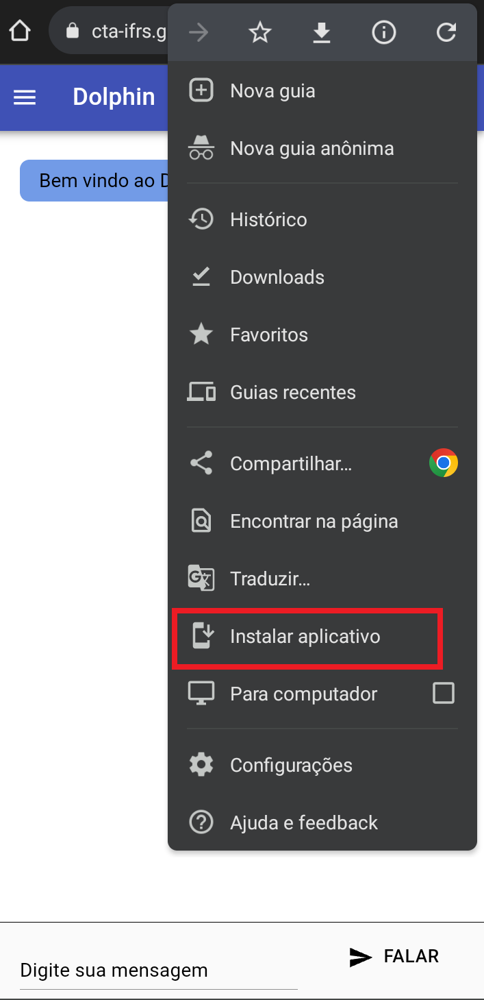
Passo 3
Ao clicar nesta opção, aparecerá uma janela solicitando a instalação da ferramenta, mostrada na imagem a seguir. Clique em “Instalar” e aguarde a finalização do processo.
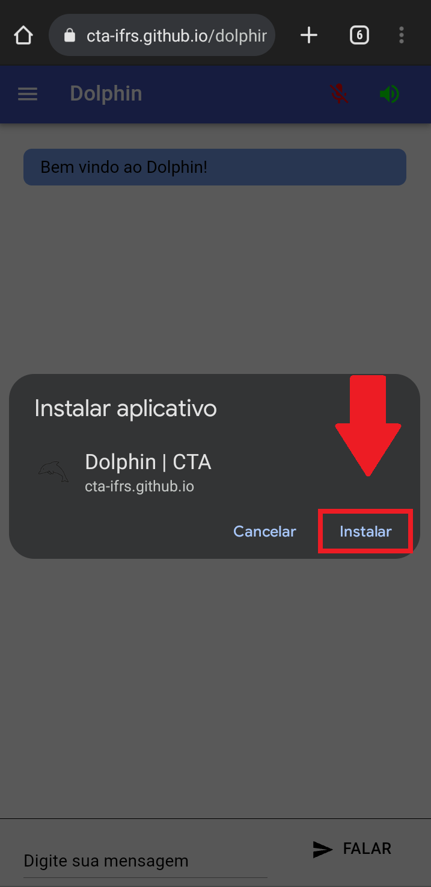
Passo 4
Pronto! A ferramenta de comunicação Dolphin já está instalada no seu smartphone. Para abrí-lo basta ir até a lista de aplicativos do dispositivo e clicar no ícone do Dolphin.
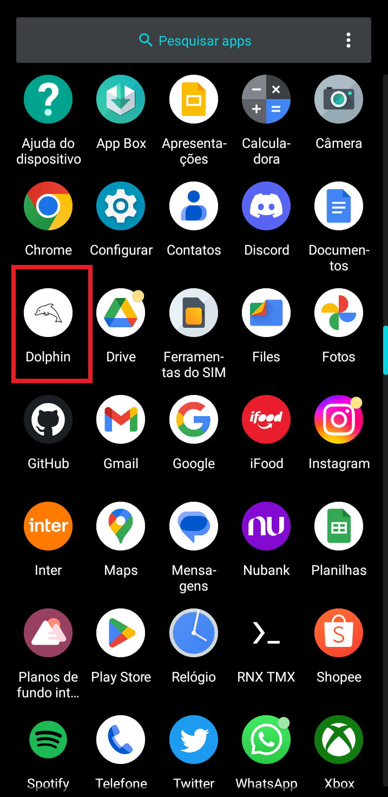
Utilizando em dispositivos móveis
O Dolphin é bastante simples de utilizar. Após abrir o aplicativo, a pessoa deverá escrever o que deseja comunicar, e em seguida clicar na opção "Falar", representada pelo ícone de alto-falante ou na tecla
"Enter" de seu teclado. Ao clicar nesta opção, a ferramenta irá vocalizar a palavra ou frase digitada. A imagem a seguir mostra a localização da opção Falar.
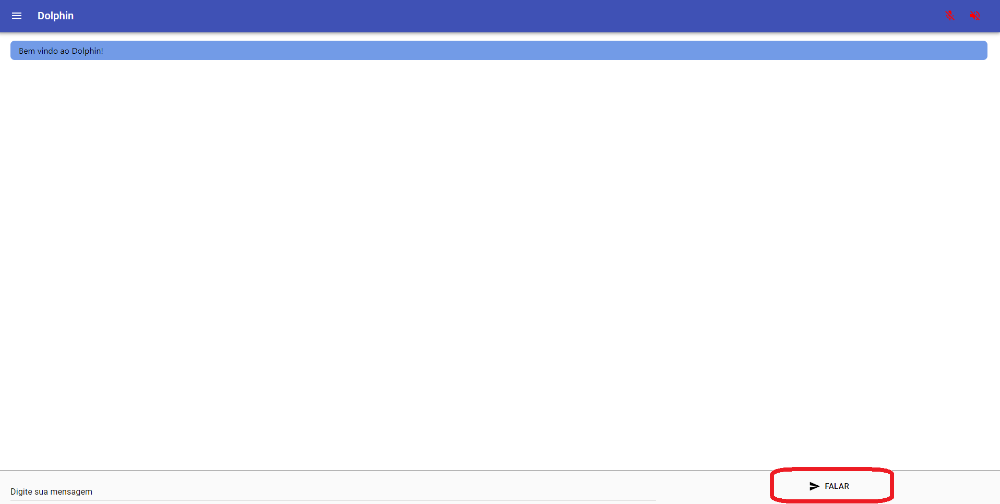
Caso deseje realizar a conversão de fala para texto, ative a opção do Microfone () indicado na imagem a seguir e comunique por meio da fala o que deseja comunicar para que a ferramenta
transforme sua fala em texto.
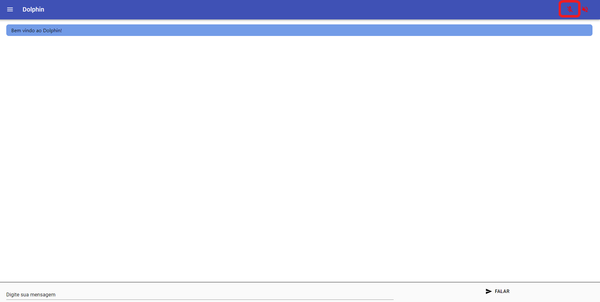
A ferramenta de comunicação conta ainda com outros dois recursos:
Alto contraste, e o modo Sépia. Esses recursos podem ser acessados clicando-se no ícone de
"menu" localizado na parte superior esquerda do aplicativo.
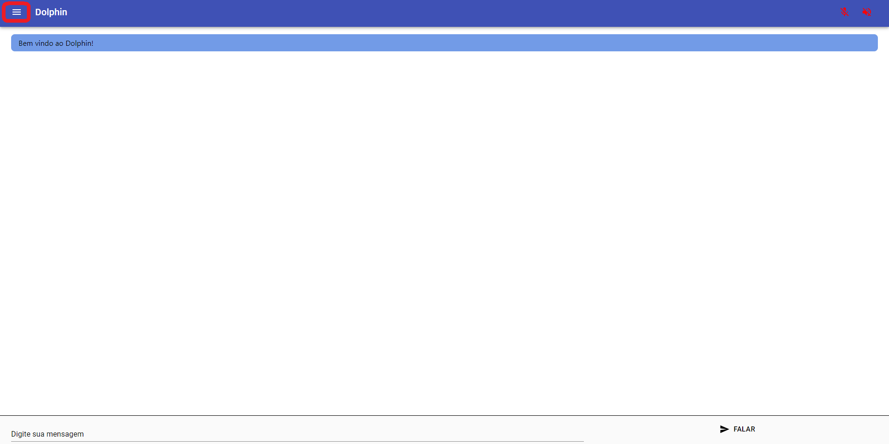
Ao clicar no ícone de "menu", será aberta uma barra contendo os dois recursos do aplicativo, conforme mostrado na imagem a seguir.
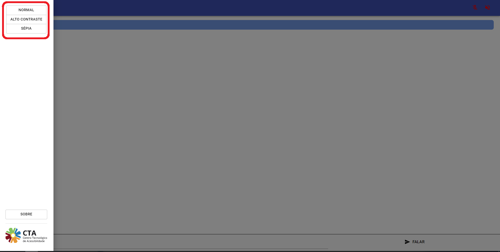
O primeiro ícone é a opção "Normal", onde a ferramenta se encontra automaticamente com suas cores definidas com padrões.
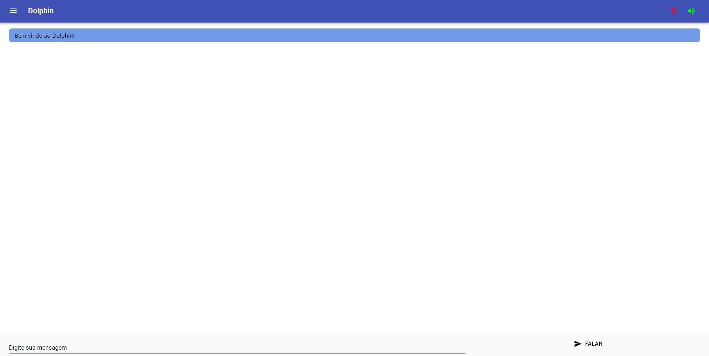
O segundo ícone é a opção "Alto contraste"onde o esquema de cores é invertido, fazendo com que o fundo fique preto e os caracteres fiquem brancos.
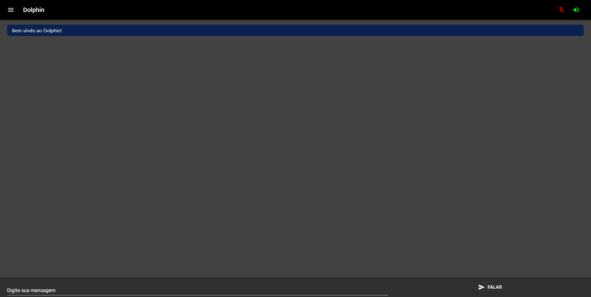
O terceiro e último ícone é a opção "Sépia" onde o fundo da ferramenta fica amarelado.
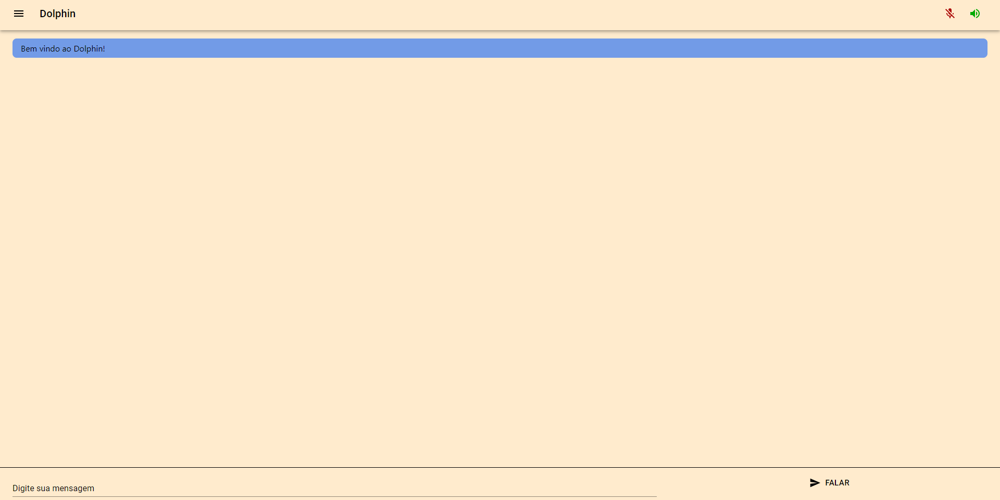
Utilizando no computador
Para usar o Dolphin no computador, você deve abrir um navegador de Internet e acessar a página da versão online da ferramenta Dolphin. As funcionalidades e configurações são as mesmas que as presentes quando instalado em um dispositivo
móvel.